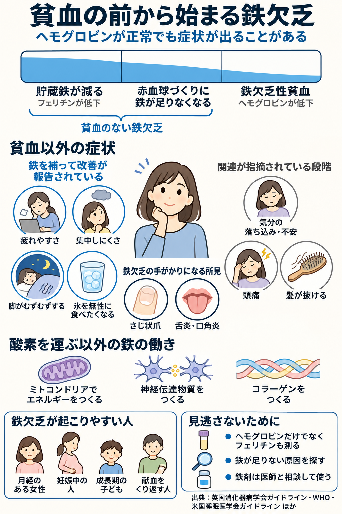

貧血の前から始まる鉄欠乏
貧血になる前の鉄欠乏で起こりうる症状を、根拠の強さで分けて、鉄の働き・起こりやすい人・見逃さないための点とあわせて1枚にまとめた図です。
画像をクリック／タップすると原寸で表示します。

出典と注意
英国消化器病学会ガイドライン、WHO、米国睡眠医学会ガイドラインほか、記事の参考文献に基づいて作成。一般的な医学情報であり、個々の診療方針は主治医と相談してください。
貧血になる前の鉄欠乏で起こりうる症状を、根拠の強さで分けて、鉄の働き・起こりやすい人・見逃さないための点とあわせて1枚にまとめた図です。
画像をクリック／タップすると原寸で表示します。

英国消化器病学会ガイドライン、WHO、米国睡眠医学会ガイドラインほか、記事の参考文献に基づいて作成。一般的な医学情報であり、個々の診療方針は主治医と相談してください。